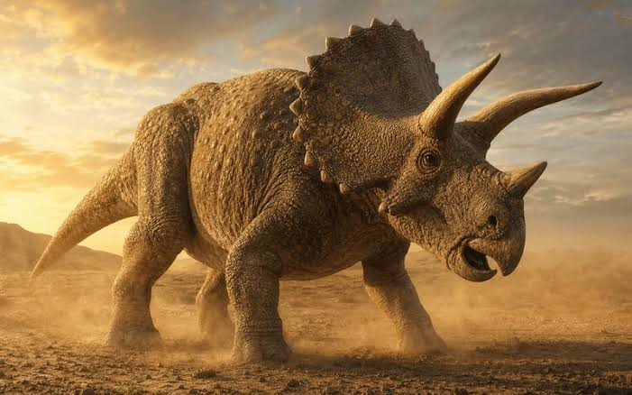
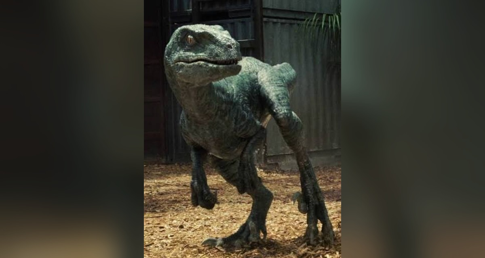
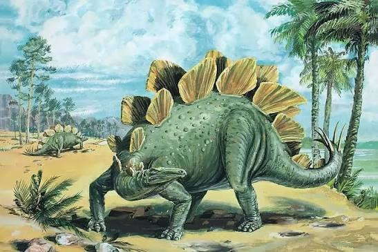
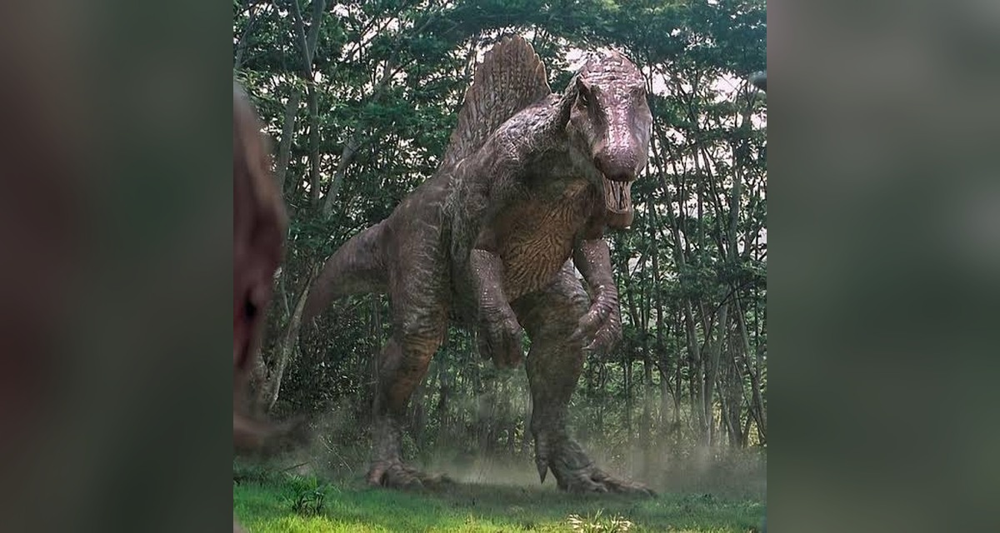

Carnivore · Late Cretaceous
Tyrannosaurus rex
A powerful predator with massive jaws and sharp teeth.
Explore its era →Discover more about Tyrannosaurus rex in the DinoWorld timeline and fossil collection.
Explore remarkable dinosaurs from the Triassic, Jurassic and Cretaceous periods.
Explore six prehistoric animals in our growing collection.
Type to search the dinosaur cards below.
Matches are highlighted in the cards. Click a suggestion to search instantly.
A powerful predator with massive jaws and sharp teeth.
Explore its era →Discover more about Tyrannosaurus rex in the DinoWorld timeline and fossil collection.

Famous for its three horns and large bony frill.
Explore its era →Discover more about Triceratops in the DinoWorld timeline and fossil collection.

A small, agile predator known for its sickle-shaped claw.
Explore its era →Discover more about Velociraptor in the DinoWorld timeline and fossil collection.

Recognized by the large plates along its back.
Explore its era →Discover more about Stegosaurus in the DinoWorld timeline and fossil collection.

A distinctive dinosaur with a tall sail on its back.
Explore its era →Discover more about Spinosaurus in the DinoWorld timeline and fossil collection.

A long-necked giant that browsed vegetation high above the ground.
Explore its era →Discover more about Brachiosaurus in the DinoWorld timeline and fossil collection.
No dinosaurs match your search. Try another name or filter.
These three cards use CSS media queries only: three columns on desktop, two on tablet, one on mobile.
Late Cretaceous predator.
Three-horned herbivore.
Jurassic plated dinosaur.
Tyrannosaurus rex lived during the Late Cretaceous period.